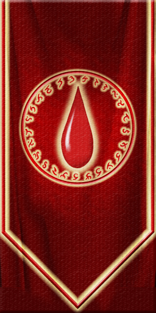

Asheron's Call · ACE · PvE
Dereth never stopped calling us home.
Buadren AC is a small, community-run Asheron's Call server. Full retail content as a foundation, with quality-of-life changes built by people who still love this world — not a from-scratch reinvention of it.
gs1.buadren.com:9000

- XP and Luminance baseline
- 10x
- Players in a fellowship
- 15
- Enlightenments, each with a reward
- 4
- Luck on legendary quest-end chests
- 94%
What is Buadren AC?
Buadren AC runs on ACE, the open-source Asheron's Call server emulator, picking up roughly where retail left off. On top of that base, we've layered changes aimed at one thing: making a small server worth logging into regularly, without losing what made the original game good.
That means an Enlightenment system that keeps giving you a reason to push further instead of hitting a wall, loot odds worth chasing, and fellowship rules that don't punish you for playing with friends at different levels. Everything we change gets written down — see the changelog for the full history.
At a glance
- Type
- PvE
- Software
- ACE
- Live server
- gs1.buadren.com:9000
- Baseline
- End of retail content
- Community
- Discord
What's different from retail
A few of the bigger changes — the full, ever-growing list lives in the changelog.
Enlightenment, reworked
Up to four Enlightenments, each granting skill and vitality points plus a Token of Wisdom to spend with Wendi the Wise. XP and Luminance scale down instead of disappearing — 5x, then 2.5x, then 1.25x, then 0.63x.
Loot worth chasing
Ultimate Legendary Chests roll at 80% luck, legendary quest-end chests at 94%, and attuned rare weapons, armor, and jewelry are purchasable from Wendi the Wise with Tokens of Wisdom.
Fellowships that work
Max fellowship size is 15. Join one from anywhere by messaging a member "xp," and any level shares XP evenly with any other.
Less busywork
No spell component burn, and a 10x baseline for XP and Luminance gain — because grinding shouldn't be the whole point.
Latest from the changelog
Ready to come home?
Most of the setup is one time only. After that, it's just launching Thwarg.